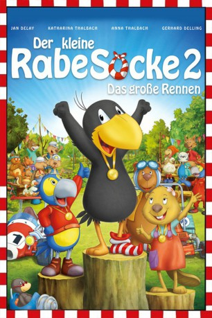

#3271 Der Kleine Rabe Socke - Das große Rennen
 gesehen am 06.03.2016
gesehen am 06.03.2016
 
 IMDB-Wertung: 7.3 / 10
IMDB-Wertung: 7.3 / 10  Metascore: 0
Metascore: 0 
Socke hat's mal wieder vermasselt. Er ist schuld daran, dass die Ernte der Waldtiere im Fluss davon schwimmt. Damit Frau Dachs nichts davon merkt, wollen der kleine Rabe und seine Freunde neue Vorräte kaufen. Das Geld dafür möchten sie bei einem Wettrennen durch den Wald gewinnen. Dabei erweist sich der ehrgeizige Rennfahrer-Papagei Rinaldo aus Südamerika nicht als einziger Stolperstein auf dem Weg zum Erfolg. Rabe, Eddie-Bär und das kesse Biber-Girl Fritzi kommen ganz schön ins Schwitzen, mehr als ihnen lieb ist.
Jahr: 2015
Dauer: 72 Minuten
FSK:
Land: Deutschland Studio: UFATonspuren:
Untertitel:
Auflösung: 1080p (1920x1040) Größe: 2846 MB
Genre: Abenteuer, Animation/Trick, Familie
Regisseur: Sandor Jesse, Ute von Münchow-Pohl
Drehbuch: Katja Grübel, Nele Moost
Soundtrack: Alex Komlew
Darsteller:
- Erik Stappenbeck als Zuschauer-Biber
- Jan Delay als Rabe Socke
 Katharina Thalbach als Frau Dachs
Katharina Thalbach als Frau Dachs- Anna Thalbach als Kleiner Dachs
- Gerhard Delling als Rennleiterbiber
- Mia Diekow als Bibermädchen Fritzie
- Ulli Smandek als Eddi-Bär
- Maximilian Artajo als Rinaldo
- Bernd Vollbrecht als Emilio, Maulwurf
- Jens Andresen als Stulle
- Tim Kreuer als Wolle
- Monty Arnold als Löffel
- Constantin von Jascheroff als Biberbruder Henry, Biber 1
- Jannik Endemann als Biberbruder Artur
- Tanja Dohse als Bibderbruder Max
- Gerald Schaale als Hirtenhund, Biber 2
- Ozan Ünal als Wolf, Fuchs, Biber 3
- Josefine Hagen als Eichhörnchen, Mäuse
- Peggy Sander als Eule
Datei: X:\Kinder Collections\Kleine Rabe Socke\Kleine Rabe Socke - Das große Rennen, Der (2015, FSK, 1920x1040).mkv seit 25.02.2016
Festplatte: Kinder-Filme+Trick
 Alle Filme aus Gruppe 'Kinder Collections\Kleine Rabe Socke'
Alle Filme aus Gruppe 'Kinder Collections\Kleine Rabe Socke'